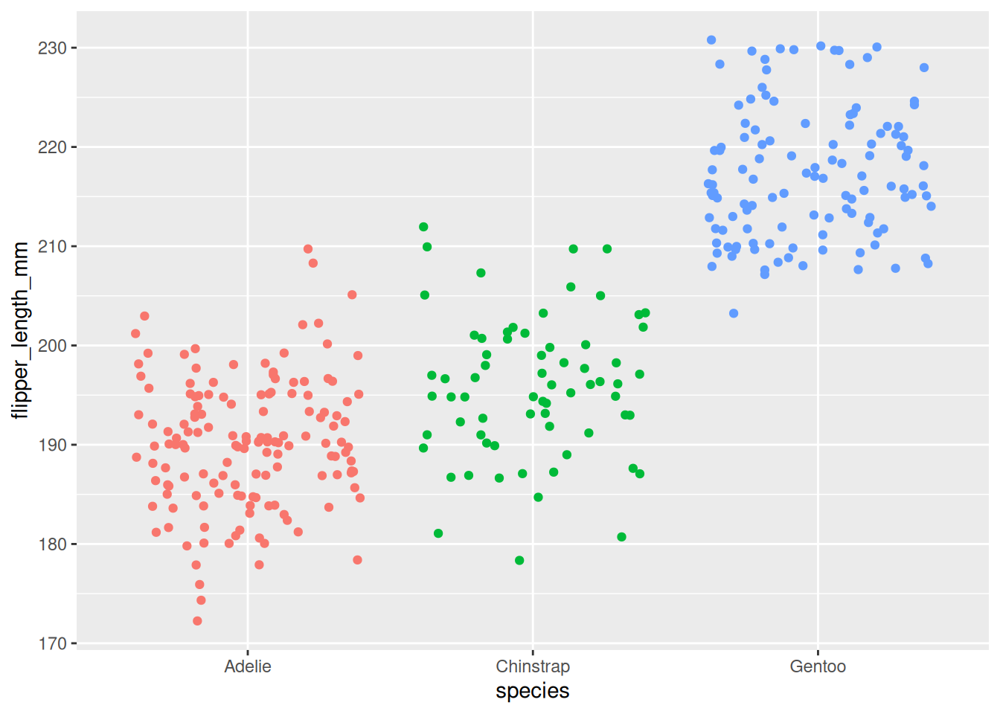
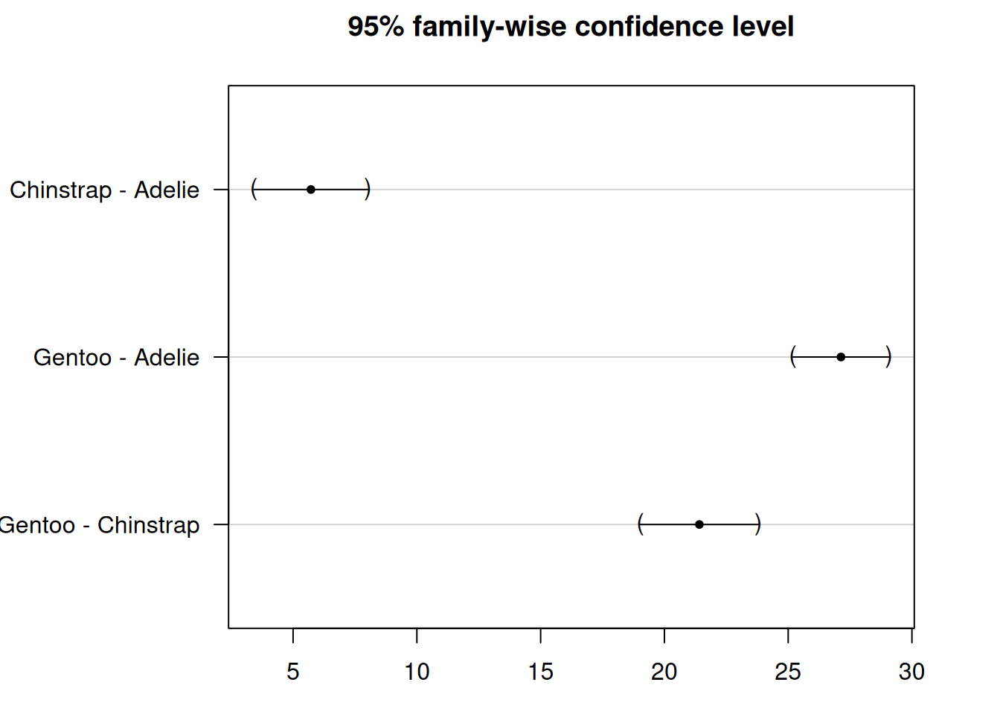

Analysis of Variance for Comparing More than Two Groups
Author
Biostatistics Teaching Team
Published
June 1, 2026
3.1 Learning Objectives
After this session, students will be able to:
Know
Understand
Do
ANOVA assumptions (normality, homogeneity of variance, independence)
ANOVA tests whether there are significant differences between three or more group means
Perform one-way ANOVA with aov()
Interpretation of F-value and p-value in ANOVA
p-value < 0.05 means at least one group differs
Calculate descriptive statistics per group
Differences between post-hoc tests (Tukey, Dunnett, Bonferroni)
Post-hoc tests identify which groups differ after a significant ANOVA
Perform post-hoc test with glht()
How to report ANOVA results in scientific format
Visualize ANOVA results with ggplot2
3.2 What is ANOVA?
ANOVA stands for Analysis of Variance. It’s a statistical method used to find out whether there are significant differences between the means of two or more groups. In other words, it helps us answer the question: Are the group averages different from each other, or are any differences just due to random chance?
3.3 When do we use ANOVA?
If you only have 2 groups, you can use a t-test to compare them.
If you have 3 or more groups, ANOVA is the better tool to use.
3.4 Types of ANOVA
There are several types of ANOVA depending on the study design (like one-way, two-way, or repeated measures).
In this course, we will focus on the one-way ANOVA, which is the simplest version. It is called “one-way” because we are looking at the effect of one factor or independent variable.
3.5 Comparing Phenotypes Across Penguin Species
Imagine you’re a wildlife researcher studying penguins in Antarctica. You have access to data from three different species of penguins:
Adelie
Chinstrap
Gentoo
You’re curious: Do these penguin species have different average flipper lengths?
Flipper length can tell us a lot about how penguins swim, hunt, and adapt to their environment.
To explore this question, you use a dataset called penguins, which contains real measurements from 344 penguins. Among the many variables recorded, you focus on:
Species — which kind of penguin it is
Flipper length — measured in millimeters
Your goal is to find out whether at least one species has a significantly different average flipper length compared to the others.
Because you’re comparing more than two groups, this is a perfect case for using ANOVA (Analysis of Variance)!
library(report)library(palmerpenguins)
Attaching package: 'palmerpenguins'
The following objects are masked from 'package:datasets':
penguins, penguins_raw
library(ggplot2)library(dplyr)
Attaching package: 'dplyr'
The following objects are masked from 'package:stats':
filter, lag
The following objects are masked from 'package:base':
intersect, setdiff, setequal, union
library(multcomp)
Loading required package: mvtnorm
Loading required package: survival
Loading required package: TH.data
Loading required package: MASS
Attaching package: 'MASS'
The following object is masked from 'package:dplyr':
select
Attaching package: 'TH.data'
The following object is masked from 'package:MASS':
geyser
library(ggstatsplot)
You can cite this package as:
Patil, I. (2021). Visualizations with statistical details: The 'ggstatsplot' approach.
Journal of Open Source Software, 6(61), 3167, doi:10.21105/joss.03167
summary(penguins)
species island bill_length_mm bill_depth_mm
Adelie :152 Biscoe :168 Min. :32.10 Min. :13.10
Chinstrap: 68 Dream :124 1st Qu.:39.23 1st Qu.:15.60
Gentoo :124 Torgersen: 52 Median :44.45 Median :17.30
Mean :43.92 Mean :17.15
3rd Qu.:48.50 3rd Qu.:18.70
Max. :59.60 Max. :21.50
NAs :2 NAs :2
flipper_length_mm body_mass_g sex year
Min. :172.0 Min. :2700 female:165 Min. :2007
1st Qu.:190.0 1st Qu.:3550 male :168 1st Qu.:2007
Median :197.0 Median :4050 NAs : 11 Median :2008
Mean :200.9 Mean :4202 Mean :2008
3rd Qu.:213.0 3rd Qu.:4750 3rd Qu.:2009
Max. :231.0 Max. :6300 Max. :2009
NAs :2 NAs :2
# Remove rows with NA valuesdf <-na.omit(penguins)head(df)
species island bill_length_mm bill_depth_mm
Adelie :146 Biscoe :163 Min. :32.10 Min. :13.10
Chinstrap: 68 Dream :123 1st Qu.:39.50 1st Qu.:15.60
Gentoo :119 Torgersen: 47 Median :44.50 Median :17.30
Mean :43.99 Mean :17.16
3rd Qu.:48.60 3rd Qu.:18.70
Max. :59.60 Max. :21.50
flipper_length_mm body_mass_g sex year
Min. :172 Min. :2700 female:165 Min. :2007
1st Qu.:190 1st Qu.:3550 male :168 1st Qu.:2007
Median :197 Median :4050 Median :2008
Mean :201 Mean :4207 Mean :2008
3rd Qu.:213 3rd Qu.:4775 3rd Qu.:2009
Max. :231 Max. :6300 Max. :2009
ggplot(df) +aes(x = species, y = flipper_length_mm, color = species) +geom_jitter() +theme(legend.position ="none")

3.6 Hypotheses of ANOVA
In the penguin example, we want to answer the question:
Is the flipper length different between Adelie, Chinstrap, and Gentoo penguins?
When performing ANOVA, we set up two hypotheses:
Null hypothesis (\(H_0\)):
The average flipper length is the same for all three species. \(H_0\): \(\mu_{Adelie} = \mu_{Chinstrap} = \mu_{Gentoo}\)
Alternative hypothesis (\(H_1\)): At least one species has a different average flipper length. \(H_1\): At least one mean is different
Important: The alternative hypothesis does not say that all the means are different. It only says that at least one of them is different.
3.6.1Hinge Question
ANOVA shows a p-value = 0.03. What is the correct interpretation?
All penguin species have different flipper lengths
At least one penguin species has a different flipper length
There is no difference in flipper length between species
The average flipper length of all species equals zero
Answer: B. ANOVA only tells us that at least one group differs, not that all groups differ.
For example, maybe Gentoo penguins have longer flippers, but Adelie and Chinstrap are still quite similar to each other.
To find out which groups are different, we would need to do additional tests after ANOVA — these are called post-hoc tests.
3.7 Retrieval Practice & Preliminary Analyses
Retrieval Practice: Before continuing to ANOVA, try to recall from the T-test session: - What is the difference between t-test and ANOVA? - When do we use t-test vs ANOVA? - What does the null hypothesis test in ANOVA?
Before running ANOVA, it’s a good idea to first explore and visualize the data. This helps us understand patterns and spot any unusual values.
3.7.1 Make a Boxplot
One of the best ways to see the differences in flipper length between penguin species is to use a boxplot.
ggplot(df) +aes(x = species, y = flipper_length_mm, color = species) +geom_boxplot()
The boxplot shows the distribution of flipper length for each species:
Gentoo penguins seem to have the longest flippers
Adelie penguins appear to have the shortest flippers
Chinstrap penguins fall somewhere in between
This visual check helps us see whether the groups look different enough to expect significant results from ANOVA.
3.7.2 Descriptive Statistics
In addition to the boxplot, we should also calculate summary statistics for each species, such as:
Mean (average flipper length)
Standard deviation (how spread out the flipper lengths are)
These numbers give us a clearer picture of the central tendency and variability in each group before running the formal test.
# A tibble: 3 × 6
species mean sd n se df
<fct> <dbl> <dbl> <int> <dbl> <dbl>
1 Adelie 190. 6.52 146 0.540 145
2 Chinstrap 196. 7.13 68 0.865 67
3 Gentoo 217. 6.59 119 0.604 118
3.8 Running ANOVA in R
So far, we’ve explored the data visually and calculated some summary statistics.
But to formally test whether the flipper lengths are significantly different between the three penguin species, we need to perform an ANOVA.
This will help us answer the original research question:
“Is the flipper length different between Adelie, Chinstrap, and Gentoo penguins?”
ANOVA allows us to make conclusions about the entire population based on the sample data we have.
In the next step, we’ll learn how to run this test in R and interpret the result.
Df Sum Sq Mean Sq F value Pr(>F)
species 2 50526 25263 567.4 <2e-16 ***
Residuals 330 14693 45
---
Signif. codes: 0 '***' 0.001 '**' 0.01 '*' 0.05 '.' 0.1 ' ' 1
3.8.1 Understanding and Interpreting the Output
When you run summary(res_aov), R will display an ANOVA table. Here’s what to look for:
F value: The test statistic. A higher F value indicates stronger evidence of differences between group means.
Pr(>F): This is the p-value. If it’s less than 0.05, we can conclude that at least one species has a different average flipper length.
The table also includes:
Degrees of freedom (Df): Tells us how many groups were compared and how many observations remain.
Mean Squares (Mean Sq): Measures variation between and within groups.
3.8.2 Interpreting the Results
In our case, the p-value is smaller than 0.05 (p < 2.2e-16), so we reject the null hypothesis.
This means we have enough evidence to say that at least one species has a different average flipper length.
We cannot say that all species are different — only that at least one species differs from the others.
If the p-value had been larger than 0.05:
We would not reject the null hypothesis.
That means we would have no strong evidence to say the species differ in flipper length.
3.8.3 Optional: Reporting the Results
A clean way to summarize the ANOVA results in R is by using the report() function from the {report} package:
# install.packages("report") # if not already installedlibrary(report)report(res_aov)
The ANOVA (formula: flipper_length_mm ~ species) suggests that:
- The main effect of species is statistically significant and large (F(2, 330)
= 567.41, p < .001; Eta2 = 0.77, 95% CI [0.74, 1.00])
Effect sizes were labelled following Field's (2013) recommendations.
3.9 What Happens After ANOVA?
3.9.1 If the null hypothesis is not rejected (p-value ≥ 0.05):
We do not have enough evidence to say that the group means are different.
In this case, the ANOVA process usually stops here.
While other analyses could still be done, we cannot conclude that any of the groups differ based on the data at hand.
3.9.2 If the null hypothesis is rejected (p-value < 0.05):
We have shown that at least one group is different from the others.
If your only goal was to test whether all group means are equal, you can stop here.
But often, we want to go further and ask:
Which group(s) are different from each other?
This is where ANOVA alone is not enough — it only tells us that some difference exists, but not where that difference lies.
3.10 What’s Next? Post-hoc Tests
To find out which specific groups differ, we need to perform post-hoc tests.
The term post-hoc means “after this” in Latin — so these tests are done after a significant ANOVA result.
They are also called multiple pairwise comparison tests.
These tests compare the groups two by two to identify exactly which group(s) have significantly different means.
3.11 The Issue of Multiple Testing
Once ANOVA tells us that at least one group is different, the next logical step is to figure out which group(s) are different.
To do this, we need to compare the groups two at a time.
In our penguin dataset with 3 species, we would make the following pairwise comparisons:
Chinstrap vs. Adelie
Gentoo vs. Adelie
Gentoo vs. Chinstrap
At first, it might seem fine to run a t-test for each of these comparisons — after all, t-tests are made for comparing two groups.
But this brings up a big problem: multiple testing (also called multiplicity).
3.11.1 Why Multiple Testing is a Problem
Each time we do a hypothesis test (like a t-test), there’s a small chance — usually 5% if α = 0.05 — that we find a significant result just by chance, even if the null hypothesis is true.
So what happens if we run multiple tests?
Let’s say we run 3 pairwise comparisons and set our significance level at 0.05. The probability of getting at least one significant result just by chance becomes:
\[\begin{equation}
\begin{split}
P(\text{at least 1 sig. result}) & = 1 - P(\text{no sig. results}) \\
& = 1 - (1 - 0.05)^3 \\
& = 0.142625
\end{split}
\end{equation}\]
That means there’s a 14.26% chance of finding a false positive — nearly 3 times higher than our intended 5% error rate!
3.11.2 More Groups, More Problems
As the number of groups increases, the number of pairwise comparisons increases rapidly:
4 groups → 6 comparisons
5 groups → 10 comparisons
10 groups → 45 comparisons
With 10 groups, the chance of getting a false positive becomes 90%, and with 14 or more groups, it’s almost guaranteed — over 99%.
3.12 Post-hoc Tests in R and Their Interpretation
Once ANOVA tells us there is a difference, post-hoc tests help us identify which specific groups are different. There are several types of post-hoc tests, and the most common ones are:
Tukey HSD: Compares all possible pairs of groups.
Dunnett: Compares each group to a reference group (e.g., a control group).
Bonferroni correction: Used when you have specific planned comparisons.
3.12.1 Bonferroni Correction
This is the simplest method. You divide your desired significance level (e.g., 0.05) by the number of comparisons.
In our penguin example, we are comparing 3 pairs:
\[\alpha' = \frac{0.05}{3} = 0.0167\]
Then you perform individual t-tests and compare their p-values to 0.0167.
If the p-value is smaller than this adjusted level, the difference is considered significant.
Note: Bonferroni is simple but conservative. It reduces false positives but may miss true differences (false negatives).
3.12.2 Bonferroni in R
We can run the Bonferroni correction using pairwise.t.test():
Pairwise comparisons using t tests with non-pooled SD
data: df$flipper_length_mm and df$species
Adelie Chinstrap
Chinstrap 3.9e-07 -
Gentoo < 2e-16 < 2e-16
P value adjustment method: bonferroni
3.12.3 Tukey HSD Test
In our case, we don’t have a reference group and we want to compare all species — so we’ll use the Tukey HSD test.
We can reuse the ANOVA result (res_aov) and run the test like this:
Simultaneous Tests for General Linear Hypotheses
Multiple Comparisons of Means: Tukey Contrasts
Fit: aov(formula = flipper_length_mm ~ species, data = df)
Linear Hypotheses:
Estimate Std. Error t value Pr(>|t|)
Chinstrap - Adelie == 0 5.7208 0.9796 5.84 2.35e-08 ***
Gentoo - Adelie == 0 27.1326 0.8241 32.92 < 1e-08 ***
Gentoo - Chinstrap == 0 21.4118 1.0143 21.11 < 1e-08 ***
---
Signif. codes: 0 '***' 0.001 '**' 0.01 '*' 0.05 '.' 0.1 ' ' 1
(Adjusted p values reported -- single-step method)
After running the Tukey HSD test with summary(post_test), R displays a section titled Linear Hypotheses:. This table shows the pairwise comparisons between groups.
Focus on two key columns:
First column: Lists the comparisons being made
(e.g., Chinstrap - Adelie == 0)
Last column (Pr(>|t|)): Shows the adjusted p-values
These are corrected for multiple testing to ensure the overall error rate stays at 0.05
The null hypothesis in each case is that the two groups have equal means.
If the p-value is less than 0.05, we reject this hypothesis — the two groups are significantly different.
In our case, the Tukey test compares:
Chinstrap vs. Adelie (Chinstrap - Adelie == 0)
Gentoo vs. Adelie (Gentoo - Adelie == 0)
Gentoo vs. Chinstrap (Gentoo - Chinstrap == 0)
All three adjusted p-values are less than 0.05, so we reject the null hypothesis for each comparison.
This means that all three penguin species are significantly different from one another in terms of flipper length.
3.12.3.1 Visualizing the Results
You can use the plot() function to generate a confidence interval plot:
par(mar=c(3,8,3,3)) # Adjust margins for better label spacingplot(post_test)

We see that the confidence intervals do not cross the zero line, which indicate that all groups are significantly different.
3.12.4 Dunnett’s Test
We’ve seen that as the number of groups increases, so does the number of pairwise comparisons.
This leads to a problem: to keep the overall error rate (e.g. 5%) under control, we have to lower the threshold for each individual test.
But when we do that, we also reduce the statistical power — meaning it’s harder to detect real differences between groups.
3.12.4.1 How Dunnett’s Test Helps
One way to improve power is by reducing the number of comparisons.
This is especially useful in experiments where there is a control group and one or more treatment groups.
Instead of comparing every group with every other group (like Tukey HSD does), Dunnett’s test:
Compares each group only to a reference group
Does not compare the non-reference groups to each other
3.12.4.2 Tukey vs. Dunnett
Test Type
Compares
Statistical Power
Tukey HSD
All groups to each other
Lower
Dunnett
Each group to a reference
Higher
3.12.4.3 Applying Dunnett’s Test
Let’s say we want to use Adelie as our reference group and compare the other two species (Chinstrap and Gentoo) to it.
3.13 Visualization of ANOVA and Post-hoc Tests on the Same Plot
To make your results easier to interpret and more visually appealing, it’s often helpful to display the ANOVA and post-hoc test results directly on your boxplots.
In the example plot above, each boxplot by species is shown along with:
The p-value from the ANOVA — usually displayed in the subtitle of the plot (e.g., p = 1.59e-107)
The p-values from post-hoc tests — shown above each pairwise comparison
3.14 Exercise: Choosing the Right Post-hoc Test
After ANOVA shows a significant difference, your task is to choose the correct post-hoc test.
3.14.1 Question 1: Plant Growth Study
A researcher wants to know whether fertilizer type (Fertilizer A, Fertilizer B, Fertilizer Control) affects tomato plant height. ANOVA shows a significant difference (p < 0.001). The researcher had planned beforehand to compare both new fertilizers against the control.
Question: Which post-hoc test is most appropriate? - A) Tukey HSD - B) Dunnett - C) Bonferroni - D) No post-hoc needed
Click to see the answer
Answer: B) Dunnett. Since the researcher only wants to compare each treatment to the control group (not compare Fertilizer A vs Fertilizer B), Dunnett’s test is the right choice — it’s more powerful than Tukey for this scenario.
3.14.2 Question 2: Fish Species Study
An ecologist compares fish body length from 4 different lakes. ANOVA shows a significant difference (p = 0.003). The researcher wants to know which lakes differ from each other.
Question: Which post-hoc test is most appropriate? - A) Tukey HSD - B) Dunnett - C) Bonferroni - D) No post-hoc needed
Click to see the answer
Answer: A) Tukey HSD. Since the researcher wants to compare all pairs of lakes (6 comparisons), Tukey HSD is the right choice — it controls error rate for all pairwise comparisons.
3.14.3 Code Exercise: Bonferroni on Tapak Dara Data
Try using the tapak dara data to test whether plant height (plant-height) differs across locations (label):
# 1. Load datatapak_dara <-read.csv("assets/data/morfologi_tapak_dara.tsv")# 2. Perform ANOVAres_aov_tapak <-aov(`plant-height`~ label, data = tapak_dara)summary(res_aov_tapak)# 3. If significant, run Bonferronipairwise.t.test(tapak_dara$`plant-height`, tapak_dara$label,p.adjust.method ="bonferroni")
Interpretation: - If ANOVA p-value < 0.05 → there is a difference between locations - If Bonferroni p-value < 0.05 → those location pairs differ significantly
The output shows pairwise comparisons with p-values adjusted using the Bonferroni method.
Tukey vs. Bonferroni: - Tukey HSD: More powerful for all-pairwise comparisons (all pairs) - Bonferroni: More conservative, suitable for planned comparisons (pre-planned comparisons)
3.15 Summary
In this exercise, we explored the key concepts and practical steps involved in performing an ANOVA analysis:
We began by reviewing the goal of ANOVA — to test whether the means of multiple groups are equal — and stated the null and alternative hypotheses.
We demonstrated how to perform ANOVA in R and interpret the output, especially the F value and p-value.
We covered post-hoc tests, including:
Tukey HSD, used to compare all pairs of groups
Dunnett’s test, used to compare treatment groups to a reference group
Finally, we showed how to visualize the data and statistical results together on a single plot for easier interpretation.